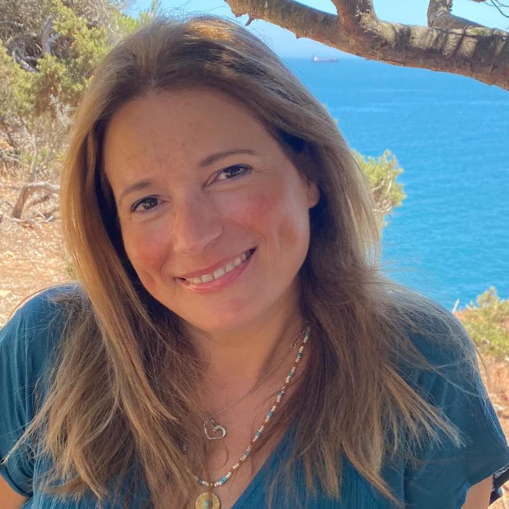

Biografia

Desde pequenina, sempre me senti atraída pelo desenho, desenvolvendo de forma autodidata as minhas técnicas, nomeadamente o carvão, focando-me quase sempre na elaboração de retratos.
Ao longo do meu percurso escolar participei em vários concursos de desenho, nos quais obtive os melhores valores.
Cheguei a Portugal em fevereiro de 1996, onde frequentei um curso contínuo de artes decorativas, no qual aprendi várias técnicas de pintura, tais como pintura a óleo, vitrais, pintura em tecido e porcelana, entre outras.
O ano 2000 marcou um momento importante no meu percurso artístico, ao ter o privilégio de conhecer o ilustre pintor francês Michel Beaudon, muito conhecido na região de Allier (França) e professor das Belas-Artes em Clermont-Ferrand. Foi a partir desse momento que iniciei aulas de aguarela e pastel seco.
A descoberta da aguarela foi um verdadeiro amor à primeira vista, técnica à qual permaneço fiel pela fluidez que proporciona. O empenho e dedicação permitiram-me desenvolver o meu próprio estilo.
Em 2001 frequentei um curso na Sociedade de Belas Artes de Lisboa, que contribuiu para a ampliação dos meus horizontes artísticos.
Destaco também o meu gosto e conhecimento pela astrologia, que se veio a aliar à pintura, permitindo a criação de trabalhos como mandalas astrológicas, desenvolvidas em total liberdade criativa.
Em 2020, a minha ligação à natureza uniu-se ao meu percurso artístico, levando-me a explorar a pintura em pedras naturais.